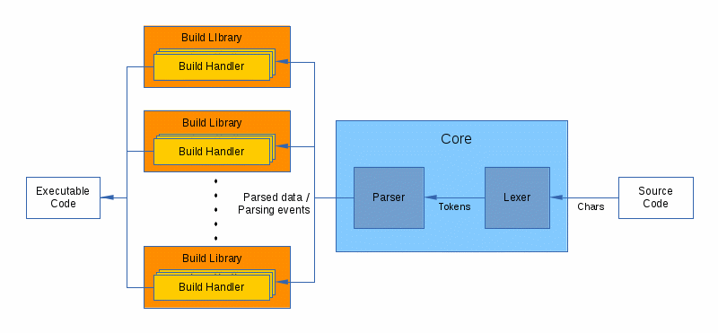
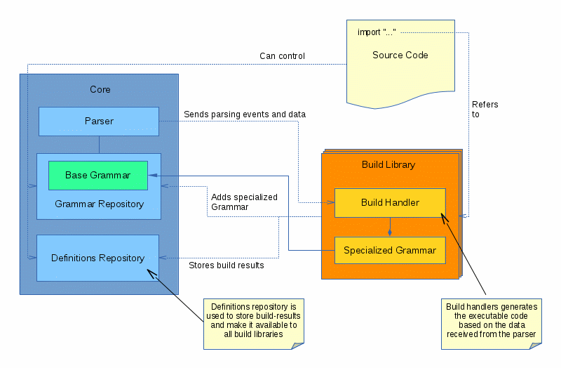
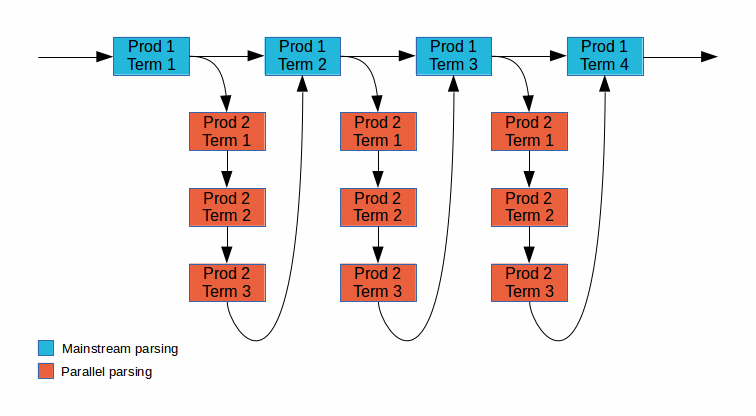

Introduction
Alusus' Definition of a Computer Program
Alusus Language's definition of a computer program is irrelevant of the field of this program or its execution environment. Alusus defines a computer program to be a set of statements; each statement consists of one or more subjects; each subject can be a literal, an identifier, an expression, a command, another statement, or a set of other statements. Based on this high level definition, a base grammar is created and is made dynamic and an ability was added to Alusus to create new grammar rules that inherits from the base grammar. This allows the language to be expandable without breaking the general guidelines and consistency of the grammar and without causing parsing ambiguity.An Open, Flexible, and Decentralied Compilation System
Instead of creating a closed monolithic compiler that understands a predefined set of programming paradigms and a predefined execution mechanism, Alusus adopted a different design that allows the compilation to be done by a system that is open and modularized with a central component that manages the compilation process and provides the foundation on which the different components of the system is based on. This allows modifying or expanding the language and the compilation proces by replacing certain parts or adding new parts. The system also allows any programmer to reach its internal components and data entities in order to develop new compilation modules and that makes it possible for the community to develop the language rather than being limited to a small central group. It also allows developing different aspects of the language simultaneously by different teams. The following graph compares a traditional compilation method to the one adopted by Alusus:
Design Overview
Compilation System
Instead of depending on a monolithic compiler, Alusus uses a compilation system that is decentralized and modularized. The compilation system consists of:- Core: The central component of the system. The Core defines the base grammar, parses the provided source code, and manages the build libraries.
- Build Libraries: Defines a specialized grammar using the base grammar and converts the parsed data into executable code. These libraries are linked dynamically to the Core which can load unspecified number of those libraries simultaneously. Loading the libraries is done through commands in the source code being compiled.

Build libraries are simply dynamic libraries that contain data types related to the grammar and the compilation process and they are loaded the same way regular libraries are loaded, i.e. with the `import` command inside the source code being compiled. This way each project can decide the language feature it needs without needing to configure the compiler in any way.The Core contains a dynamic repository for grammar definitions that can be accessed by build libraries to add their own specialized grammar or build handlers. The Core also contains a generic definitions repository that can be used by build libraries to add their build results to make them available publicly to other build libraries or to the program being built.
The following graph shows the relations between the different components of the build system:

It's also possible to define additional grammar or build handlers inside the source code being built itself. In other words, the program being built can define its own grammar given that those definitions preceed their use in the source code.Grammar of Alusus Language
Alusus' grammar has the following features:- Data Driven Grammar: It's possible to build grammar definitions that are controllable by variables at run time.
- Dynamic Grammar: It's possible to add or modify new grammar during compilation.
- Grammar Inheritance: It's possible to derive new grammar definitions from other definitions using grammar inheritance which allows the new grammar to inherit and override the properties of the parent grammar. This feature also allows building grammar templates.
- Modular Grammar: Alusus allows the creation of grammar modules to group related grammar together and simplify grammar inheritance. For example, all grammar definitions related to expressions are grouped in one module which makes it easy to create specialized expressions by inheriting the expression module.
- Program: A set of statements.
- Statement: Consists of one subject or a series of subjects.
- Subject: Can either be a literal, an identifier, an expression, a command, a statement, or a set of statements.
- Command: Consists of a keyword, followed optionally by a subject or a series of subjects.
- Expression: Consists of a subject, or a hierarchy of subjects linked with operators.
Notice from the definitions above that the base grammar is not related in any way to the nature of the program or the environment of execution. It does not associate the language with a certain field, instead it leaves the language open to all fields of programming. The Core only understands a small set of specialized commands, among those is a command to load other libraries or source files (import command). When a build library is loaded, it feeds the Core with its own specialized grammar which is derived from the base grammar and it remains responsible for handling the data parsed with those specialized grammar definitions. The Core links the new grammar to those libraries and it calls them during parsing whenever it encounters that grammar. The Core can load an unspecified number of libraries and it remains responsible for coordinating between them.
Grammar and Parsing Techniques
Using Data in Grammar Definitions
Grammar definitions can use data through variables defined within the grammar rule or within a module. The following example shows a command definition that keeps the keyword data driven:
SubCmd (kwd:string) : kwd Expression.
IfCommand : SubCmd("if") Statement.
WhileCommand : SubCmd("while") Statement.
In the upper example, the definition of `SubCmd` receives a string as a
parameter and uses it as a literal in the definition. This deinition is
then used to define two commands: If and While. This technique is not limited
to using data as literals; it's also possible to use arrays and apply grammar
operations on them. For example:
BinaryOperation (kwds:list[string]) : Operand (kwds[0] | kwds[1] | ...) Operand. LogicalOperation : BinaryOperation(["and", "or", "xor"]). MathOperation : BinaryOperation(["+", "-", "*", "/"]).Usage of data in grammar definitions is open to all possibilities in a way similar to how variables are used in programming languages. For example, it's possible to apply the elements of the array on a template and apply grammar operations on the result as in the following example:
BinaryOperation (kwds:list[string]) : Operand (Command(kwds[0]) Command(kwds[1]) ...).
Modularized Grammar
Grammar definitions can be grouped into modules in a way similar to object oriented programming. In the following example, definitions related to expressions are grouped into one module:
Expression : {
Add (kwds=["+","-"]) : Multiply [(kwds[0] | kwds[1] | ...) Add].
Multiply (kwds=["*","/"]) : Operand [(kwds[0] | kwds[1] | ...) Multiply].
Operand : Identifier | Literal.
}.
It's also possible to define a module inside another module, and it's possible
for definitions inside a module to refer to or be referenced by definitions
outside the module.
Grammar Inheritance
In Alusus, grammar definitions can inherit from other definitions. As in object oriented programming, inheritance in the grammar copies the properties of a definition into the inheriting definition which can in turn override some of those properties. For example, if we have the following definition:LogicalOperation (kwds=["and", "or"]) : Operand (kwds[0] | kwds[1] | ...) Operand.then we can derive a new definition from it and add more keywords to the child (inheriting) definition:
MyLogicalOperation -> LogicalOperation ( kwds = ["and", "or", "&&", "||"] ).Inheritance is also possible with modules, so you can have one module inherits from another. In the case of modules, inheritance copies all elements of the parent module to the child module which in turn can replace some of those elements or add new elements. In the following example we define a module that inherits another module and replace one of its definitions:
MyExpression -> Expression {
Operand : Identifier | Literal | "(" Add ")".
}.
Multi-Dimensional Parsing
Multi-dimensional parsing allows marking certain grammar productions to be parsed in parallel to the main parsing thread. On each step of the main parsing thread, the parser can jump into the parallel parsing thread and once it's done parsing the parallel thread it goes back to the same point where it left in the main parsing thread. The following figure shows how the operation works:
This technique is used to simplify the defintion of productions that can appear in many places across the grammar, instead of having to manually reference that production everywhere. The following example clarifies the benefit of this technique:DefStatement : "def" Identifier ":" Identifier. ParallelStatement : "@" Identifier.With the definition of ParallelStatement as a parallel grammar, the following statements become all valid:
@myattribute def myvar : mytype; def @myattribute myvar : mytype; def myvar : @myattribute mytype;Without multi-dimensional parsing, the defintion of DefStatement will have to be like this:
DefStatement : [ParallelStatement] "def" [ParallelStatement] Identifier ":" [ParallelStatement] Identifier.
Design Principles
- Independence of grammar from context: Alusus grammar should remain independent from the context of the program. In other words, the parser should be able to parse the source code without needing to know what that code or its elements actually mean.
- Avoid unneeded syntax: For example, there is no need to force the use of brackets if the code can be parsed without them.
- Consistency of grammar and design: We should keep consistency in the grammar and the libraries.
- Rationality for grammar rather than habits: We don't necessarily need to follow what's common in progamming languages because the logical reasoning is more important than the beautiy of the code or the habits of the programmers.
- There are no standards in syntax designs, but there is a standard for the syntax of math formulas. Therefore, mimicking math standards should be higher priority under the condition that it doesn't contradict with the rationality of the grammar. For example, functions in math are written using regular brackets therefore functions in Alusus should also be written using regular brackets.
- Minimize dependence on new grammar: The more generic the grammar is, the less is the need for new grammar.
- Orthogonality and modular design: Orthogonality and modular design should be targetted as much as possible.
- Enabling the programmer to work on all levels starting from direct control of the hardware all the way to the highest programming level.
- Limiting a single library to the same programming level: When designing the standard libraries, mixing different programming levels inside the same library should be avoided as much as possible.
- Support the features at the lowest possible level: The lower the level at which a feature is supported, the wider is its availability.
- Avoid making decisions on behalf of the programmar: A programmer should know how the compilation system will treat his program. For example, it's not appropriate for a build library to decide the memory management model without allowing the programmer to control that decision.
- Avoid artificial boundaries: For example, we should not prevent the programmer from using direct pointers in a certain context if such usage is possible. Depriving the programmer from a feature just because it can be misused is not acceptable.
Standard Libraries
- Dynamic Libraries: These are pre-built binary libraries. The Core loads these libraries, but it does not interact with them in any way.
- Build Libraries: These are dynamic libraries that contain a specific interface recognized by the Core upon loading. The Core invokes the initialization function within these libraries to add their rules and custom build handlers. These libraries are used for extensions that require an open interaction with all Core modules, such as adding a complete programming paradigm.
- Source Files: These are files written in Alusus language, which the Core compiles and executes upon loading.
- Standard Programming Paradigm Library: A build library that contains the necessary grammar rules and build handlers for procedural programming.
- Standard Runtime Library: This library contains a set of functions and basic classes used by user programs during execution, such as math libraries or string manipulation libraries.
- Alusus Package Manager: A library that provides the ability to download other libraries directly from the web and import them into the user's program.
- Closure: A library that provides the functionality of closures.
- Build: A library that enables the creation of executable files from the user's project.
Standard Programming Paradigm Library
This is the most important of the standard libraries. It provides the procedural programming paradigm as well as object-oriented programming. Without it, the compiler cannot distinguish or execute programs. It relies on LLVM to generate the final executable code. This library contains numerous classes within it, which can be divided into the following groups:- AST (Abstract Syntax Tree): Classes representing the abstract structure tree used by the library in its own grammar rules.
- Handlers: Classes for build handlers specific to the library.
- CodeGen: Classes that convert the program from the AST format to a format understood by a low-level code generator, such as LLVM.
- LlvmCodeGen: Classes that serve as the bridge between the library and LLVM.
This library provides the following features:
- Low-level data types.
- Procedural programming and related functions, conditional statements, etc.
- User-defined classes.
- Basic building blocks for object-oriented programming.
- Class and function templates.
- Macros.
- Modules.
- Just-in-Time (JIT) Execution: When the compiler encounters code outside functions (e.g., in the root scope), it compiles it along with its dependencies of classes and functions, and executes it directly.
- Preprocess Execution or Execution during Compilation: The library provides special syntax to specify code that is executed during the compilation of functions and classes. This allows users to create new code and add it to functions or classes being compiled.
- Offline Builds: The library allows on-demand translation of any part of the source code. In this case, the element is compiled into executable code that is stored in a file instead of being executed.
Overview of the Syntax
Expressions
Expressions consists of subjects linked with operators in a way similar to popular programming languages. The following is a list of the important operators:NOT operator: !
OR operator: |
XOR operator: $
AND operator: &
Math operators: +، -، *، /
Bitwise operators: &، |، $، !
Logical operators: &&، ||، $$، !!
Comparison operators: <،>، =>، = <،=
Assignment operator: =
Other Assignment operators: +=، -=، *=، /=، |=، &=، $=
Lists are separated by commas. For example: a,b,c
Grouping subjects is done using regular brackets: ()
Loops
For: "for" Initial_Expression "," Condition_Expression "," Update_Expression (Statement|Block). While: "while" Expression (Statement|Block). Do-While: "do" (Statement|Block) "while" Expression.
Conditional Statements
"if" Expression (Statement|Block) ["else" (Statement|Block)].
Definitions
Definitions in the language are done using the `def` command including variable definitions, constant definitions, function definitions, class definitions, etc. The `function`, `class`, and `module` commands also provide a shorter syntax without the use of the `def` keyword. The `def` command has the following syntax:"def" name ":" body.`body` can be a function, a class, a namespace, a datatype, etc., as in the following:
Variable Definition:
"def" name ":" type.Constant Definition:
"def" name ":" value.Function Definition:
"def" name ":" "function" "(" Input_List ")" "=>" Output Block.
Shorter Function Definition:
"function" name "(" Input_List ")" "=>" Output Block.
Template Function Definition:
"def" name ":" "function" "[" Template_Arg_List "]" "(" Input_List ")" "=>" Output Block.
Shorter Template Function Definition:
"function" name "[" Template_Arg_List "]" "(" Input_List ")" "=>" Output Block.
Class Definition:
"def" name ":" "class" Block.Shorter Class Definition:
"class" name Block.Template Class Definition:
"def" name ":" "class" "[" Template_Arg_List "]" Block.Shorter Template Class Definition:
"class" name "[" Template_Arg_List "]" Block.Module Definition:
"def" name ":" "module" Block.Shorter Module Definition:
"module" name Block.The `def` command is also used in other definitions like arrays and pointers as explained below.
Arrays
Arrays are defined using the `def` command as follows:"def" name ":" "array" "[" type, number "]".Array Usage:
name "(" number ")".
Pointers
Pointers are defined using `def` as follows:"def" name ":" "ptr" "[" type "]".To access the location pointed by a pointer the `~cnt` operator is used:
name "~cnt".To get the location of a variable the `~ptr` operator is used after the variable's name:
name "~ptr".
Mixing Definitions
It's possible to mix between definition types using `def`. For example, you can define a pointer to an array, or a pointer to a function, or an array of pointers, etc. The following example shows how to define an array of pointers to functions:"def" name ":" "array" "[" "ptr" "[" "function" "(" Params ")" "]" "]".
Merging Definitions
Definitions can be merged with an existing definition using the def command by adding the @merge modifier, as follows:"@merge" "def" name ":" "module" "{" Definitions "}".
"@merge" "def" name ":" "{" Definitions "}".
Modifiers
Modifiers can appear almost anywhere in the program and not necessarily at the beginning of a statement. Modifiers have the following syntax:"@" name [ Expression ].
Regular Brackets and Square Brackets
Regular brackets are used for runtime operations like grouping subjects in an expression or passing arguments in function calls. On the other hand square brackets are used for compile-time operations like defining the type of a pointer or an array. In other words, if the info is to be sent to the compiler itself the square brackets are used, otherwise regular brackets are used.Curly Brackets {}
Curly brackets are used to group multiple statements into a block. These blocks are used in conditional statements for example or in bodies of functions, classes, or namespaces.
Block: "{" [ Statement_List ] "}".
Statement_List: Statement { ";" [Statement] }.
Seperating Statements
Semicolons are used to separate statements in a way similar to the usage of comma to separate elements of a list. In other words, the semicolon itself is not part of the statement and it can be ignored if no other statement follows it.Rationale Behind Some Syntax Decisions
- Function Brackets: Regular brackets have always been used for functions in math, so Alusus chose to follow suit and use them for functions.
- Command Arguments: Command arguments (like expressions of conditional statements) do not include brackets because parsing can be done without them, therefore adding them is meaningless.
- Some programmers prefer not to use statement separators (;) but if this is correct then why do we have statement separators in human languages?
- Access control keywords like `public` and `private` are treated as modifiers (starting with @) because they only carry metadata that are used by the compilation system and they do not affect the way the program is executed.
- Definitions always begin with a keyword followed by the identifier name. Nothing precedes the identifier name except the keyword. This is done to fully encapsulate the definition in the context that follows the name, rather than having the identifier name lost in the middle of the sentence, as is the case with function definitions in the C language, for example. This helps facilitate understanding of definitions, especially with complex ones, such as a pointer to a function or an array of pointers to functions.
- Regular brackets are used to access array members instead of square brackets because the latter is used for compile time arguments. For the same reason regular brackets are used to dynamically specify array sizes while square brackets are used to define array types which is a compile time info.